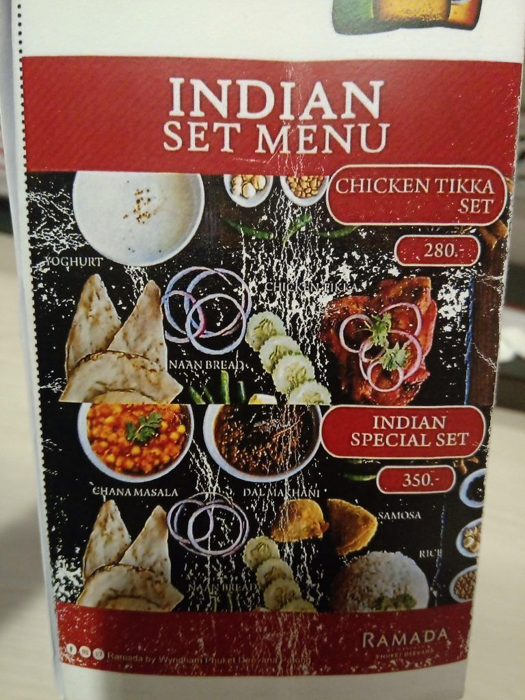
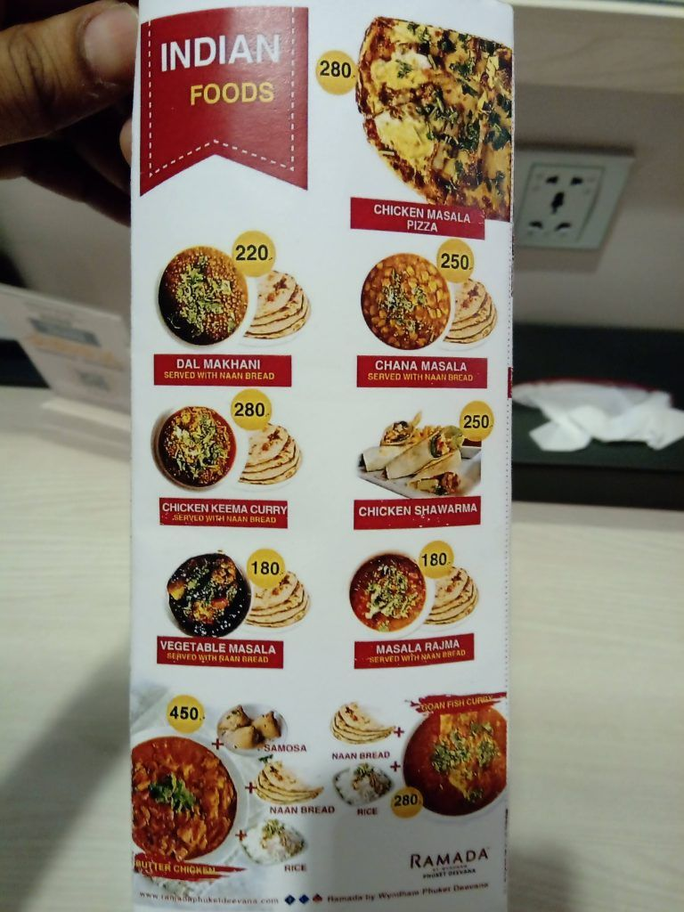
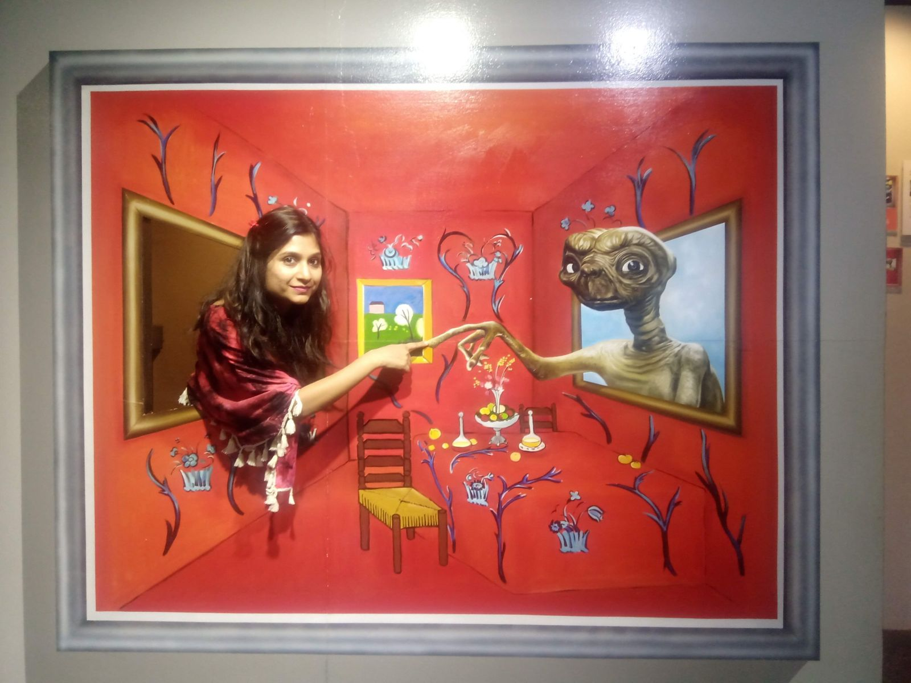
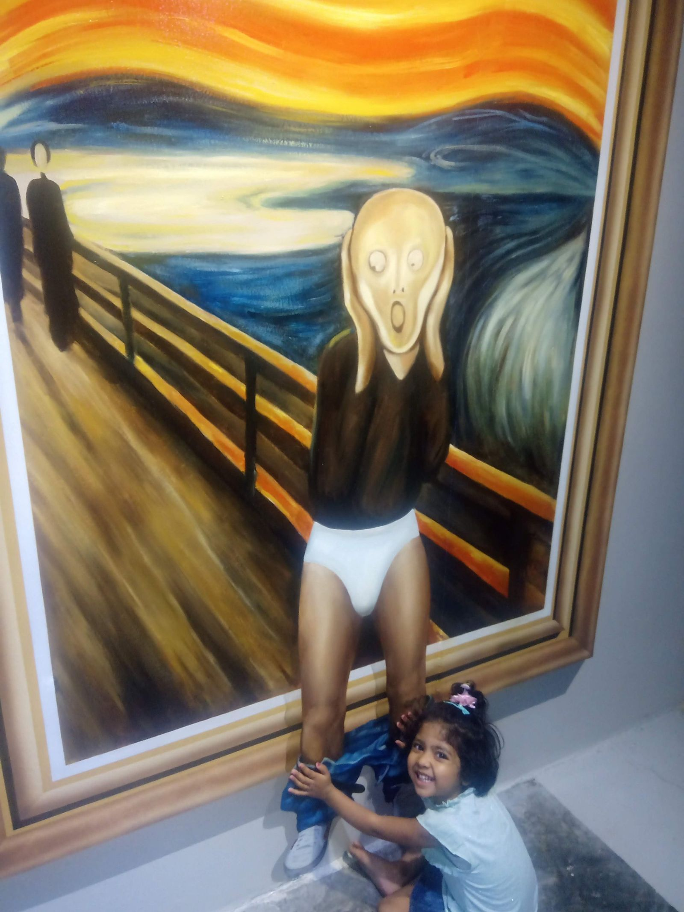
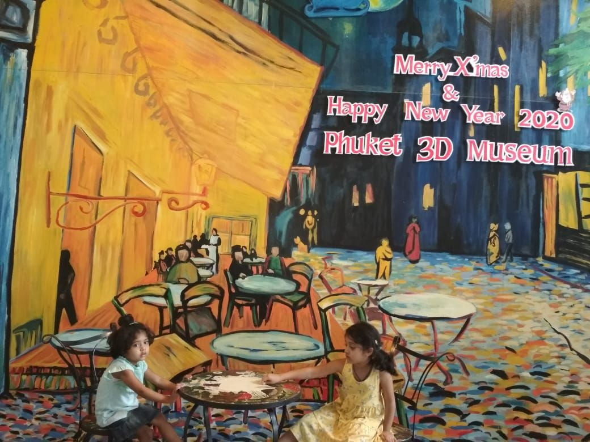
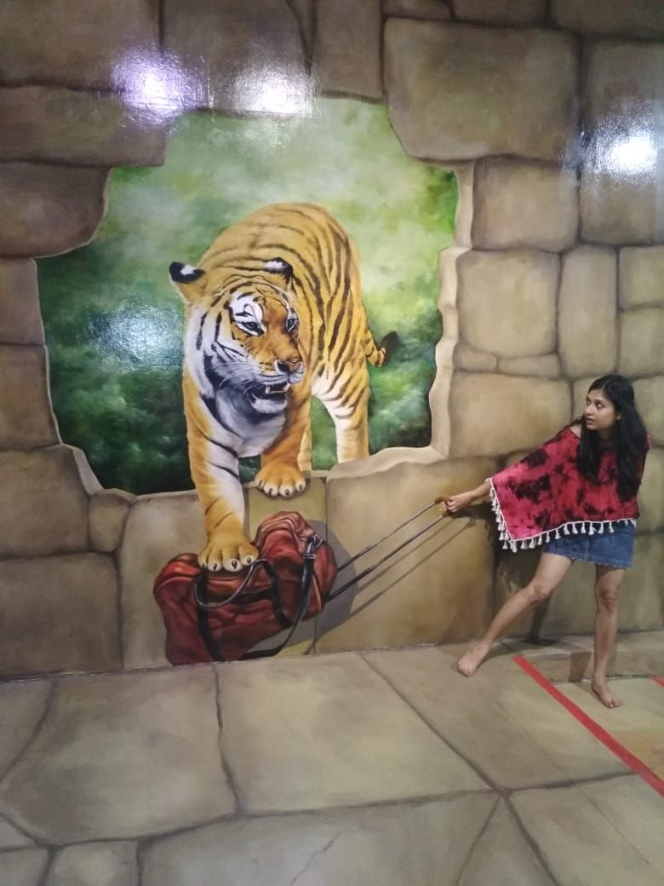
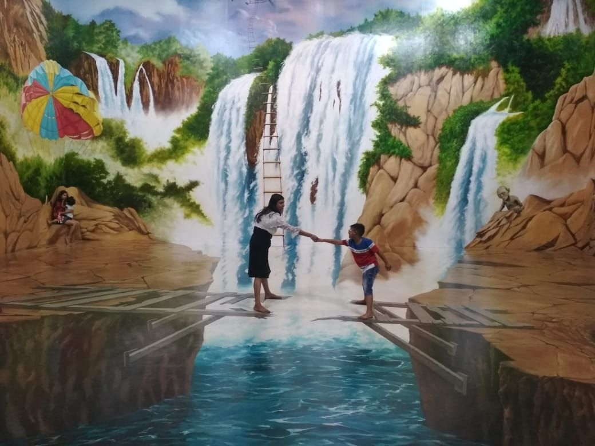
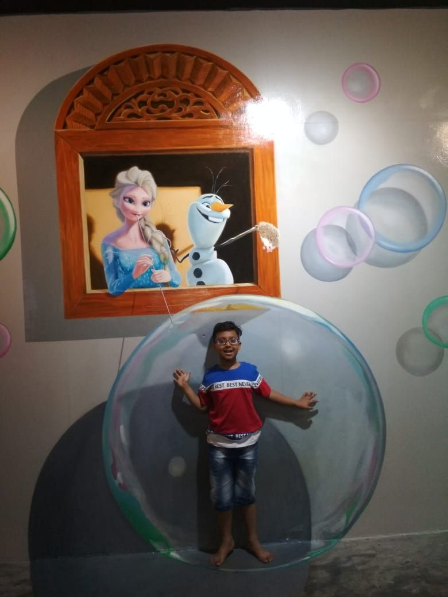

Written after our trip, in February 2020. Prices, visa rules and opening times may have changed since, so please check before you book.
This blog details our first time to Phuket and gives information on places to visit, where to stay, what to do, costs incurred etc. I hope it acts as a travel guide for family with kids (especially Indian vegetarians).
Phuket is one of the most popular cities in Thailand. Beautiful beaches and amazing nightlife make this a popular tourist attraction.
As you know from my Thailand diaries, our trip was of 12 days. We began with a short stay in Bangkok followed by a flight to Phuket. We spent 3 days in Phuket before moving to the next destination (Koh Samui) followed by Pattaya. We had chosen to go in 1st week of January when the weather is best.
Click here to read my article on Pattaya
Table of Contents
How to reach Phuket
Being an international airport, Phuket offers good air connectivity on both domestic and international routes. Phuket airport is around 30km from Phuket city. There is shared minibus available at the airport which costs 180 Baht per person for drop to main city. Since we were 7 people and had to go to Patong, we booked a personal minibus via Grab. It cost us 987 Baht and dropped us directly to our hotel in about 1 hour.
Other options for reaching Phuket include buses from major cities and ferries from few cities to Phuket.
Useful Tip - Thailand has multiple Low-cost carrier airlines (Air Asia, Nok Air, Thai Lion airways etc) which regularly offer dirt cheap prices. At times, they are even cheaper than bus/ferries/taxies. We booked during MakeMyTrip sale and got 7 tickets on Air Asia flight from Bangkok to Phuket for just 6293/- all-inclusive. This was about half the price of bus tickets.
So ensure you check flight prices (both direct flight from your country to Phuket and connecting flight from your country to Bangkok and then to Phuket) before booking your flights.
Where to stay
If you are staying in Patong area of Phuket, I will recommend you to stay around Bangla road. You will have access to everything in the vicinity. You can walk to beaches, night clubs, restaurants, do street shopping and easily get public transportation to any place in Phuket/Krabi/other town.
We stayed in Ramada hotel in Deevana Patong (and it was our best hotel in the entire trip) but there are other good hotels like Novotel, Ibis and many others in the vicinity.
Hotel Review
- Location – I will give Ramada 8 marks on location convenience. It is centrally located. Both the beach and Bangla road are about 10 - 15 minutes walking distance. Lots of restaurants, street shopping, local shops and 7-11 / family mart are within walking distance.
- Rooms – We had booked 2 Deluxe rooms but were lucky to be upgraded to Premium rooms free of charge. And the Premium rooms were just amazing!!. So spacious, beautifully decorated and with a nice little balcony.
- Amenities – They have amazing amenities. Swimming pool has an attached bar and you can sip your drink in the pool itself. Water was clean and the weather was perfect for swimming anytime of the day. Plus the bar played amazing music adding to the fun. Hotel also has kids play area and a gym. Their restaurant had a special Indian menu for lunch/dinner and the prices were at par with those we found in city restaurants.




- Breakfast – Breakfast buffet was the best in Ramada for vegetarians. They served different set of fruits (including exotic fruits like dragon fruit, passion fruit etc) on all days. Apart from juice, milk, bread, croissant and muffin options, they had multiple dishes prepared daily for vegetarians – cheese pizza, parathas, poha, upma, idli, museli, poori, baked beans (rajma) etc. They also had flavored yogurt, flavored milk options, waffles and pancakes along with naturally extracted honey. And all these veg items were kept in a separate section to ensure they are not mixed with other non-veg items. The only complaint was that they had only dark chocolate muffins on all days. Would have appreciated if there was variety in muffins :)
- Price - We were able to book rooms in Ramada at approx 2500 INR / 1000 Baht per room per night inclusive of breakfast via MMT.
- Drinking-Water Policy - One thing we observed in Thailand is that majority of hotels (and all the restaurants) do not give free drinking water. You will have to buy water bottle or carry your own. Ramada provides 2 free bottles per room per day. But unlike other hotels of our visit, we were able to return empty bottles and get new bottles via house-keeping. However, there was no water dispenser/refilling option at reception or restaurant.
What we did in Phuket
Being with kids, our main aim of vacations was to relax and enjoy ourselves. And we did just that in Phuket. Enjoying leisurely breakfast till 10.30 am followed by hotel amenities (swimming) is where we spent first half of the day. The second half was utilized in enjoying on Patong beach, exploring Bangla Road, doing window shopping at multiple street shops and enjoying outdoor buffet Indian dinner with live songs in Ramada. And yes, in between we also took out time to go to the 3D Art Museum.
- Patong beach - Nice beach with level ocean bed which means you can walk deep into the ocean without fear of tripping and drowning. There are lots of water sports activities which happen on the beach. This is walkable from Bangla road.
- Trick Eye 3D art museum - Located in Bangkok, Pattaya and Phuket, this is something you should not miss. They have various 3D Images and markers on where to stand and from where to click the photo. End result is that you will appear to be part of the image :). You can easily spend 3 - 4 hours here. Just remember to take fully charged camera/mobile phone as you will be clicking loads of photos. Note - I will recommend visiting Pattaya museum as that is in the city center. The one in Phuket is really far and you will have to shell out 1000 baht just for transport.






- Bangla Road - Bangla Road is famous for its nightlife, bars and adult entertainment. However, this is still a must-visit place for everyone. While there is not much to do in the daytime, its real feel will come only after sunset. Vehicle traffic is stopped on this road after 6 pm and the entire street turns into a vibrant party zone with multiple pubs, clubs, discs and adult clubs getting into action, playing loud music and creating a vibrant atmosphere. You can see people dancing on the road and having a good time. The energy and the atmosphere is so amazing that you just want to keep dancing the entire night. Just ensure that you don’t go with kids in the night as you will find people smoking, drinking and vendors trying to entice you to go in adult clubs.
Useful Tip -> Parties on Bangla Road go on till 3 - 4 am in the morning. So ensure your hotel is not exactly on Bangla Road. Else you will not be able to sleep due to loud music.
Places we did not visit
From Phuket, our next destination was Koh Samui. We were hoping to depart via a night bus/ferry. But on inquiry, we got to know that the night ferry to Koh Samui has been stopped. All the tour agency shuttles depart for Koh Samui between 7.30 - 9 am. And the private taxis were too expensive. Hence, faced with no choice, we had to sacrifice one day of Phuket to go to Koh Samui and left few of following tourist places (although we covered most of them in other cities):
- Ocean world aquarium (we had already covered that in Bangkok)
- Inverted house (we could not visit this in any of our 3 cities - Bangkok, Pattaya, Phuket)
- Dolphin show (covered this in Pattaya)
- Siam Niramit and Fantasea show
- Tribhum show
- Old town tour, Phuket city tour
- Island hopping tour - Phi Phi island, Krabi island and many others - We skipped these full-day island tours as their schedule was hectic and we felt it will be too tiring for kids of our group. Plus we were already covering Koh Samui island in our itinerary.
Food options
Patong has several Indian restaurants and hence you will not face problems. Most of these prepare food (or atleast claim to prepare) in refined oil. We visited Kohinoor restaurant, Gandhi restaurant and Ramada. Found the food to be good in Gandhi and Ramada but average in Kohinoor.
Conclusion
Looking back now that I have completed my trip, I could have planned Phuket better. I lost one full day going to Koh Samui and 1000 Baht visiting 3D museum. Had I known that there is another 3D museum walkable from my Pattaya hotel, I would have utilized my time in Phuket better.
Another thing I realized is that Phuket was the costliest among all 3 cities. Since sight-seeing options are spread, you lose money on travel (unlike Pattaya, there are no 10 Baht tuktuks in Phuket). Average food expenses (Indian vegetarian food for 4 adults plus 3 kids) were 1000 - 1200 Baht in Phuket as compared to 800 - 1000 Baht in Pattaya / Koh Samui.
You can say that Phuket is like Goa of India (with Patong similar to Calangute beach albeit a bit cleaner). Just because it is popular, people visit it. However, there are many other beautiful beaches and islands in Thailand and you can skip Phuket if you have other beaches on your itinerary.